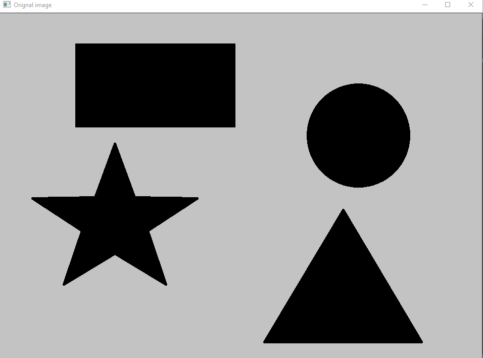
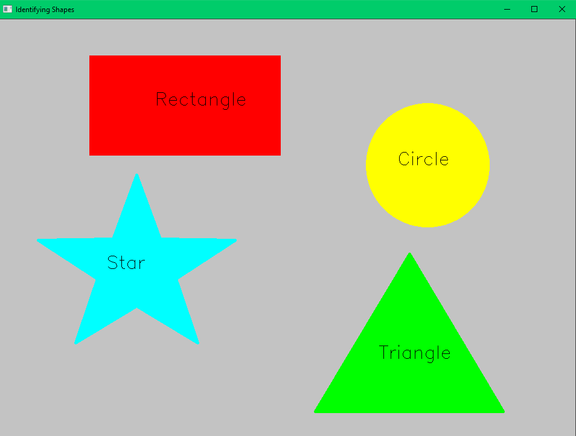

import numpy as np
import cv2
# Load image
image = cv2.imread('images/test.png')
#convert bgr image into gray
gray = cv2.cvtColor(image, cv2.COLOR_BGR2GRAY)
cv2.imshow('Orignal image',image)
cv2.waitKey(0)
ret, th = cv2.threshold(gray, 127, 255, 1)
# Extract Contours from image
contours, hierarchy = cv2.findContours(th.copy(), cv2.RETR_LIST, cv2.CHAIN_APPROX_NONE)
for cnt in contours:
# Get approximate polygons
approx = cv2.approxPolyDP(cnt, 0.01*cv2.arcLength(cnt,True),True)
# for triangle
if len(approx) == 3:
shape_name = "Triangle"
cv2.drawContours(image,[cnt],0,(0,255,0),-1)
# Find center to put text at the center
M = cv2.moments(cnt)
cx = int(M['m10'] / M['m00'])
cy = int(M['m01'] / M['m00'])
cv2.putText(image, shape_name, (cx-50, cy), cv2.FONT_HERSHEY_SIMPLEX, 1, (0, 0, 0), 1)
elif len(approx) == 4:
x,y,w,h = cv2.boundingRect(cnt)
M = cv2.moments(cnt)
cx = int(M['m10'] / M['m00'])
cy = int(M['m01'] / M['m00'])
# Check to see if 4-side polygon is square or rectangle
# cv2.boundingRect returns the top left and then width and
if abs(w-h) <= 3:
shape_name = "Square"
# Find contour center to place text at the center
cv2.drawContours(image, [cnt], 0, (0, 125 ,255), -1)
cv2.putText(image, shape_name, (cx-50, cy), cv2.FONT_HERSHEY_SIMPLEX, 1, (0, 0, 0), 1)
else:
shape_name = "Rectangle"
# Find contour center to place text at the center
cv2.drawContours(image, [cnt], 0, (0, 0, 255), -1)
M = cv2.moments(cnt)
cx = int(M['m10'] / M['m00'])
cy = int(M['m01'] / M['m00'])
cv2.putText(image, shape_name, (cx-50, cy), cv2.FONT_HERSHEY_SIMPLEX, 1, (0, 0, 0), 1)
elif len(approx) == 10:
shape_name = "Star"
cv2.drawContours(image, [cnt], 0, (255, 255, 0), -1)
M = cv2.moments(cnt)
cx = int(M['m10'] / M['m00'])
cy = int(M['m01'] / M['m00'])
cv2.putText(image, shape_name, (cx-50, cy), cv2.FONT_HERSHEY_SIMPLEX, 1, (0, 0, 0), 1)
elif len(approx) >= 15:
shape_name = "Circle"
cv2.drawContours(image, [cnt], 0, (0, 255, 255), -1)
M = cv2.moments(cnt)
cx = int(M['m10'] / M['m00'])
cy = int(M['m01'] / M['m00'])
cv2.putText(image, shape_name, (cx-50, cy), cv2.FONT_HERSHEY_SIMPLEX, 1, (0, 0, 0), 1)
cv2.imshow('Identifying Shapes',image)
cv2.waitKey(0)
cv2.destroyAllWindows()
About cv2.threshold(src, thresh, maxval, type[, dst]):
. The function applies fixed-level thresholding to a multiple-channel array. The function is typically
. used to get a bi-level (binary) image out of a grayscale image ( #compare could be also used for
. this purpose) or for removing a noise, that is, filtering out pixels with too small or too large
. values. There are several types of thresholding supported by the function. They are determined by
. type parameter.
Output

